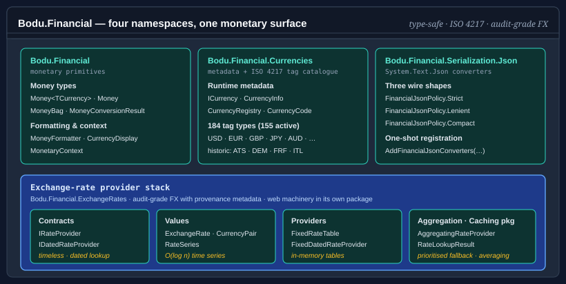

Bodu.Financial

Bodu.Financial is the monetary-primitives package of the Bodu suite. It ships type-parameter-tagged and runtime-tagged money types, a shipped catalogue of 184 ISO 4217 currencies (155 active and 29 historic), an exchange-rate provider stack with both timeless and dated lookup, and — in the companion Bodu.Financial.Serialization.Json package — JSON converters with three policy shapes for ledger-style, lenient-import, and compact-wire integrations. Part of the Numerics & Financial topic.
The package depends on Bodu.Numerics so Money<TCurrency> can round-trip through Fraction<BigInteger> for sub-minor-unit-precise intermediate calculations — interest accumulation, percentage-of-percentage, and other chains where deferred rounding matters.

Namespaces and headline types
Bodu.Financial
| Type | Purpose |
|---|---|
| Money<TCurrency> | Immutable, value-equatable monetary amount whose currency is encoded as the type parameter. Cross-currency arithmetic fails the build, not at runtime. |
| Money | Runtime-tagged sister type — currency carried as a CurrencyCode. The fallback when the currency is data rather than type, e.g. deserialisation or generic invoicing. |
| MoneyBag | Immutable mixed-currency portfolio. Aggregates per-ISO balances, prunes zero balances, enumerates in lexicographic ISO order. |
| CurrencyDisplay | Currency symbol / display-name formatting for presenting an amount's currency. |
| MoneyConversionResult<TSource, TTarget> | Audit record returned by extension methods that convert through a dated provider — pairs source and target amount with the full lookup result. |
Bodu.Financial.Currencies
All currency metadata lives in this namespace — the runtime lookup surface alongside the tag catalogue:
| Type | Purpose |
|---|---|
| ICurrency | Static-abstract interface carrying ISO code, minor-unit count, cash rounding increment, and demonetisation metadata. Implemented by every shipped currency tag. |
| CurrencyInfo, CurrencyRegistry | Runtime currency metadata record and a read-only catalogue over the shipped ISO 4217 currencies (active and historic). |
| ICurrencyLookup, CurrencyLookupService, CurrencyResolution | The runtime lookup contract, its default implementation over the registry, and the ambient resolution seam for substituting or restricting the metadata source. |
Alongside these sit the sealed tag types — one class per ISO 4217 code — each implementing ICurrency. The catalogue ships 184 codes:
- 155 active currencies — USD, EUR, GBP, JPY, AUD, CAD, CHF, CNY, …
- 29 historic currencies — the Euro-zone predecessors (ATS, BEF, CYP, DEM, EEK, ESP, FIM, FRF, GRD, HRK, IEP, ITL, LTL, LUF, LVL, MTL, NLG, PTE, SIT, SKK) plus other notable replacements (AZM, GHC, MZM, ROL, SRG, TMM, VEB, VEF, ZWL). Each declares
IsHistoric => true,DemonetizedOn, andSuccessorIsoCode.
Each tag is source-generated from currencies.json and exposes get-only static members — IsoCode, NumericCode, MinorUnits, and (where they differ from the interface defaults) CashRoundingIncrement, EnglishName, IsHistoric, DemonetizedOn, SuccessorIsoCode. The tag types only ever exist statically — every one has a private constructor — so Money<USD> is the only way to materialise a value. The runtime CurrencyCode enum carries the same 184 codes plus a None = 0 sentinel (185 members), keyed by ISO 4217 numeric code and tagged with each currency's CurrencyStatus (Active / Historic).
Bodu.Financial.ExchangeRates
The exchange-rate values, stores, and provider contracts, shipped in the core Bodu.Financial assembly:
| Type | Purpose |
|---|---|
| ExchangeRate, CurrencyPair, RateObservation, RateSeries | Immutable FX observation value object, strongly-typed (from, to) key, single dated observation, and an O(log n) time series over observations. |
| RateSeriesBuilder, RateSeriesKey, RateTableBuilder | Mutable companion to RateSeries for building or editing observations, the (pair, provider) key, and a higher-level multi-series editor for import workflows. |
| IRateProvider, IDatedRateProvider | Timeless and dated provider contracts. The dated form returns an RateLookupResult with provenance metadata (offset days, resolution policy, provider name). |
| FixedRateTable, FixedDatedRateProvider | In-memory provider implementations. Grouping several FX sources behind one entry point (prioritised fallback, averaging, per-FX-pair routing) lives in the Bodu.Financial.ExchangeRates.Caching package as AggregatingRateProvider. |
The same namespace is also where the separate Bodu.Financial.ExchangeRates package adds the web-provider machinery (WebRateProvider, PairWebRateProvider<TSeries>, and their supporting types) that the per-source feed packages build on — see Exchange-rate providers and caching below. The core Bodu.Financial package itself carries no HTTP machinery.
Bodu.Financial.Serialization.Json (companion package)
System.Text.Json converters and the FinancialJsonPolicy enum (Strict = 0, Lenient = 1, Compact = 2), shipped in the companion Bodu.Financial.Serialization.Json package — the core library is serialization-agnostic and its types carry no [JsonConverter] attribute. FinancialJsonSerializerOptionsExtensions.AddFinancialJsonConverters(options, policy) registers all six converters at once — for Money<TCurrency> (via a JsonConverterFactory), Money, CalculatedMoney, MoneyBag, ExchangeRate, and CurrencyPair — under the chosen policy, and returns the same JsonSerializerOptions for chaining. Each converter also has a parameterless constructor that defaults to Strict.
Exchange-rate providers and caching
The exchange-rate core (IRateProvider / IDatedRateProvider, ExchangeRate, the in-memory tables) lives in the Bodu.Financial.ExchangeRates namespace, shipped in the core Bodu.Financial package. The web/HTTP machinery — the abstract WebRateProvider and PairWebRateProvider<TSeries> bases, WebRateProviderOptions, and the single-flight and response-cache plumbing — is factored into the separate Bodu.Financial.ExchangeRates package, so the core package carries no HTTP machinery (and no logging dependency). Live feeds ship as per-source packages over that base, each isolating one feed's HTTP and parsing dependencies (a named HttpClient plus Polly resilience, registered through the generic AddWebRateProvider machinery). Every provider type and its DI registration extension share the single flattened Bodu.Financial.ExchangeRates namespace.
| Source (package) | Provider type | Coverage | DI registration |
|---|---|---|---|
Reserve Bank of Australia (…ExchangeRates.Rba) |
RbaRateProvider | base AUD, historical | AddRbaExchangeRates() |
European Central Bank (…ExchangeRates.Ecb) |
EcbRateProvider | base EUR, reference | AddEcbExchangeRates() |
Bank of England (…ExchangeRates.Boe) |
BoeRateProvider | base GBP, reference | AddBoeExchangeRates() |
Yahoo (…ExchangeRates.Yahoo) |
YahooRateProvider | any pair | AddYahooExchangeRates() |
OFX (…ExchangeRates.Ofx) |
OfxRateProvider | any pair | AddOfxExchangeRates() |
XE (…ExchangeRates.Xe) |
XeRateProvider | any pair | AddXeExchangeRates() |
OANDA (…ExchangeRates.Oanda) |
OandaRateProvider | any pair, rolling ~180 days | AddOandaExchangeRates() |
Fixer (…ExchangeRates.Fixer) |
FixerRateProvider | any pair, access_key |
AddFixerExchangeRates() |
exchangerate.host (…ExchangeRates.ExchangeRateHost) |
ExchangeRateHostRateProvider | any pair, access_key |
AddExchangeRateHostExchangeRates() |
FRED (…ExchangeRates.Fred) |
FredRateProvider | mapped pairs, api_key |
AddFredExchangeRates() |
IMF (…ExchangeRates.Imf) |
ImfRateProvider | base USD, keyless, daily | AddImfExchangeRates() |
RBA, ECB, BoE, and IMF quote one base currency against many others (AUD, EUR, GBP, USD) and extend WebRateProvider directly — IMF downloads the IMF's monthly Representative Exchange Rates TSV report and normalizes its quotation direction to a consistent USD base; Yahoo, OFX, XE, OANDA, Fixer, exchangerate.host, and FRED fetch a distinct series per pair and extend PairWebRateProvider<TSeries> (FRED maps each pair to a source series identifier through its options; Fixer, exchangerate.host, and FRED require an API key). Each provider exposes two public constructors — an options-only form that builds and owns its HttpClient, and a form that takes a caller-supplied HttpClient (the shape the DI registration uses, backed by IHttpClientFactory). The shared Bodu.Financial.ExchangeRates.DependencyInjection package supplies the generic AddWebRateProvider<TProvider, TOptions> machinery every provider's Add<Source>... method delegates to: it binds the options from a configuration section, registers a named HttpClient with the standard Polly resilience handler (AddStandardResilienceHandler), and exposes the provider as both IDatedRateProvider and IRateProvider. Each Add<Source>... method binds a default section (Financial:Rba, Financial:Ecb, Financial:Boe, Financial:Yahoo, Financial:Ofx, Financial:Xe, Financial:Oanda, Financial:Fixer, Financial:ExchangeRateHost, Financial:Fred, Financial:Imf) and returns the IFinancialServiceBuilder for chaining. Every provider advertises how far back it serves rates through HistoryAvailability — an RateHistoryAvailability that is unbounded, a fixed earliest date, or a rolling window (for example OANDA's anonymous endpoint exposes roughly the last 180 days) — so a caller can resolve the earliest date worth requesting before issuing a lookup.
A provider-agnostic caching layer in Bodu.Financial.ExchangeRates.Caching wraps any of these. CachingRateProvider is a read-through decorator over an IRateCache, and AggregatingRateProvider fronts several sources at once (priority / average strategies, per-pair routing). The core caching package ships in-memory and TOML-file caches; durable backends add on as SqliteRateCache (…Caching.Sqlite) and DistributedRateCache (…Caching.Distributed, e.g. Redis through IDistributedCache). Each package ships its own registration extensions — AddCachedRateProvider, AddAggregatedRateProvider, AddSqliteRateCache, and AddDistributedRateCache / AddRedisRateCache — all declared in the root Bodu.Financial.ExchangeRates namespace.
See the exchange-rate providers, caching, and lookups guides for the full provider, cache, and dated-lookup workflows.
Allocation
Splitting $1.00 into three shares cannot return [0.33, 0.33, 0.33] — that loses a cent. Money<T>.Allocate(int parts) splits an amount into shares whose sum equals the original exactly: the residual minor units are distributed one per share from the start of the array, and the rule is sign-stable, so a negative amount distributes the residual in the same direction. Allocate(ReadOnlySpan<decimal> ratios) weights the shares proportionally:
Money<USD>[] shares = new Money<USD>(0.10m).Allocate(3);
// [0.04, 0.03, 0.03] — sums to exactly 0.10
decimal[] ratios = { 1m, 1m, 2m };
Money<USD>[] split = new Money<USD>(100m).Allocate(ratios);
// [25.00, 25.00, 50.00]
The residual-distribution rule is the AllocationPolicy LargestRemainder (Hamilton) strategy — each leftover minor unit goes to the share with the largest fractional remainder, with ties broken by stable input order — so the parts always sum back to the original amount with no penny lost or invented, deterministically across runs. See Working with Money<TCurrency> for the validation rules and worked examples.
Cash rounding
A handful of currencies round physical cash totals to a coarser increment than their electronic minor unit — Switzerland's 5-rappen coin, Australia's and Canada's 5-cent cash totals, New Zealand's 10-cent rounding, Sweden and Norway's whole-krona rounding. The shipped catalogue surfaces the convention through CashRoundingIncrement (the smallest cash denomination in the major unit, or 0m when no special rounding applies), and Money<T>.RoundToCash() snaps an amount to the nearest multiple of that increment using banker's rounding by default:
new Money<CHF>(12.34m).RoundToCash(); // CHF 12.35
new Money<NZD>(5.07m).RoundToCash(); // NZD 5.10
new Money<USD>(19.99m).RoundToCash(); // USD 19.99 — no-op, no cash increment
Cash rounding is a presentation choice for physical payments, not a storage rule: electronic transactions retain full minor-unit precision, so call RoundToCash() only at the point a total becomes a cash payment. An explicit MidpointRounding argument opts out of the banker's-rounding default.
JSON serialization
JSON support ships in the companion Bodu.Financial.Serialization.Json package; registration via AddFinancialJsonConverters is required — the monetary types carry no [JsonConverter] attribute. The FinancialJsonPolicy enum selects the wire shape and parsing strictness:
| Policy | Wire shape | Use case |
|---|---|---|
Strict (default) |
{ "amount": 19.99, "currency": "USD" } for money; { "balances": { … } } for bags. |
Canonical ledger, persistence, audit. |
Lenient |
Same shape as Strict, but normalizes lowercase ISO codes to uppercase and trims whitespace before validation. |
Spreadsheet and external-feed import — not a canonical storage shape. |
Compact |
Single string "19.99 USD" for money; flat object { "USD": 19.99, "EUR": 12.34 } for bags. |
Wire-size-sensitive APIs and human-readable logs. |
using Bodu.Financial.Serialization.Json;
var options = new JsonSerializerOptions();
options.AddFinancialJsonConverters(FinancialJsonPolicy.Compact);
string json = JsonSerializer.Serialize(new Money<USD>(19.99m), options); // "19.99 USD"
Deserialization on Money<TCurrency> rejects payloads whose currency field does not match TCurrency.IsoCode — currency drift surfaces as JsonException, not as a silently re-interpreted amount.
Scenarios this library covers
| Scenario | Reach for |
|---|---|
| Type-safe monetary arithmetic that catches USD-vs-JPY mistakes at compile time | Money<TCurrency> |
| Runtime-tagged amount for deserialisation or generic invoicing | Money |
| Multi-currency portfolio with aggregate-then-convert workflows | MoneyBag |
| Sub-minor-unit-precise interest / percentage chains | Money<T>.ToFraction() / FromFraction() / MultiplyExact() |
| Splitting an amount fairly across N shares without remainder loss | Money<T>.Allocate(parts) / Allocate(ratios) |
| Cash rounding for currencies with coarse coin denominations (CHF, AUD, NZD, …) | Money<T>.RoundToCash() and ICurrency.CashRoundingIncrement |
| ISO 4217 currency lookup at runtime | CurrencyRegistry |
| A generic amount in a unit outside the shipped catalogue | your own ICurrency tag + Money<TCurrency> (generic only; cannot bridge to runtime Money) |
| Dated FX lookup with audit-grade provenance metadata | IDatedRateProvider + RateLookupResult |
| Prioritised fallback (or averaging) across multiple FX sources | AggregatingRateProvider (in Bodu.Financial.ExchangeRates.Caching) |
| Build a rate series imperatively, or edit an existing one and snapshot the result | RateSeriesBuilder, RateSeries.ToBuilder() / WithRate(...) / WithoutRate(...) |
Import rates for many (pair, provider) combinations before producing immutable snapshots |
RateTableBuilder |
| Three JSON wire shapes (strict-canonical, lenient-import, compact-string) for the same monetary type | FinancialJsonPolicy |
Design choices
- Currency in the type system, not as a field.
Money<USD>andMoney<JPY>are different types. Adding them fails the build rather than running with the wrong unit. The escape hatch isMoneywhen the currency is genuinely unknown until runtime. - Banker's rounding default. Construction rounds to the currency's minor-unit precision using
MidpointRounding.ToEven, matching .NET'sdecimalconvention and IEEE 754. Pass an explicitMidpointRoundingargument to opt out. - Audit-friendly FX. Dated provider lookups return
RateLookupResult, which carries the provider name, the actual date used, the offset-day distance from the requested date, the resolution policy that fired, and an inversion flag — enough to reconstruct any conversion after the fact. - Zero-balance pruning.
MoneyBagremoves zero balances on every operation, so equality and enumeration are stable across insertion order and across serialisation round trips.
Bodu.Financial.DependencyInjection
The companion Bodu.Financial.DependencyInjection package — a separate, Stable package — wires the stack into a Microsoft.Extensions.DependencyInjection container:
dotnet add package Bodu.Financial.DependencyInjection
The entry point is AddFinancialService(...), an IServiceCollection extension method in the Bodu.Financial namespace. Both overloads register the default ICurrency lookup and return a fluent IFinancialServiceBuilder on which you compose the rest of the stack: a replacement currency lookup, named monetary contexts, and timeless and dated exchange-rate providers. Passing an IConfiguration additionally binds FinancialOptions from a configuration section (default "Financial"). Financial JSON registration (services.AddFinancialJson(policy)) ships in the companion Bodu.Financial.Serialization.Json package.
using Bodu.Financial;
using Microsoft.Extensions.DependencyInjection;
builder.Services.AddFinancialService(configure: financial =>
{
financial
.AddExchangeRateProvider<MyRateProvider>()
.AddDatedExchangeRateProvider<HistoricalRateProvider>();
});
The package references Bodu.Financial and Bodu.Core plus the Microsoft.Extensions abstractions it binds against (DependencyInjection.Abstractions, Options, Options.ConfigurationExtensions, Configuration.Abstractions, Configuration.Binder); applications that construct the financial types by hand (consoles, libraries, tests) do not need to reference it. See Financial dependency injection for the full builder surface, options binding, and the post-build UseCurrencyResolution activation step.
Where to go next
- Core concepts — glossary the rest of the documentation assumes.
- Getting started — install the package and run minimal samples for
Money<TCurrency>,Money,MoneyBag, the FX provider stack, and the JSON policies. - Working with
Money<TCurrency>— type-parameter currency, allocation, conversion, exact-arithmetic chains, formatting and parsing, cash rounding, historic currencies,Moneyinterop,MoneyBagportfolios. - Financial dependency injection —
AddFinancialService, the fluent builder, options binding, and activation. - Numerics & Financial topic overview — how this package,
Bodu.Numerics, and the DI companion fit together. - Numerics & Financial guides — the guides landing page for both libraries.
- Bodu.Numerics introduction — the rational-arithmetic library that backs
Money<T>.ToFraction(). - Bodu.Financial API reference — full type-by-type docs.
- Bodu.Financial.Currencies API reference — the currency metadata surface and the shipped ISO 4217 catalogue.
- Bodu.Financial.ExchangeRates API reference — the exchange-rate stack: core FX types, the web-provider machinery, and the per-source providers.
- Bodu.Financial.Serialization.Json API reference — JSON converters and policies (companion package).